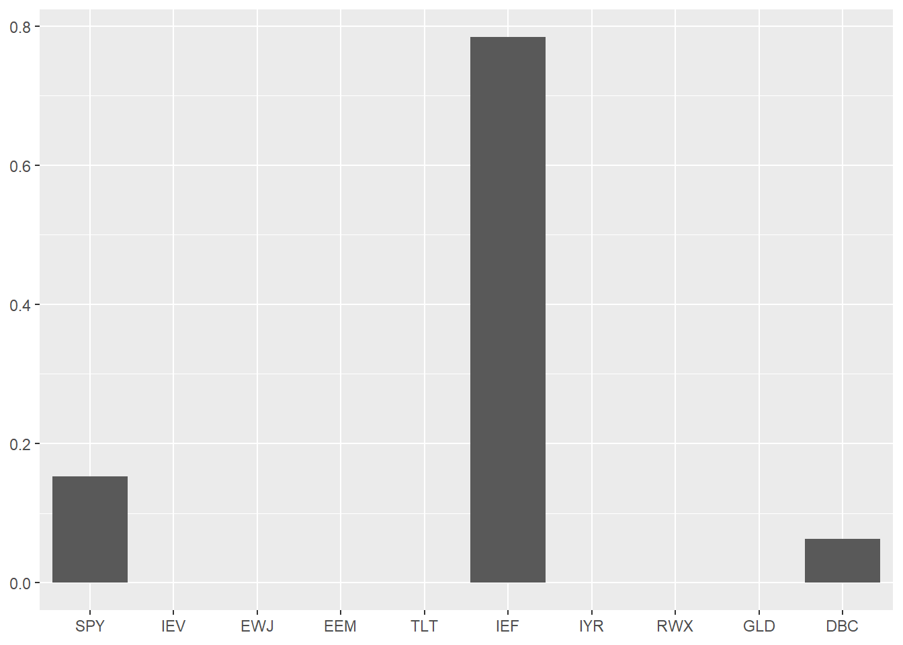
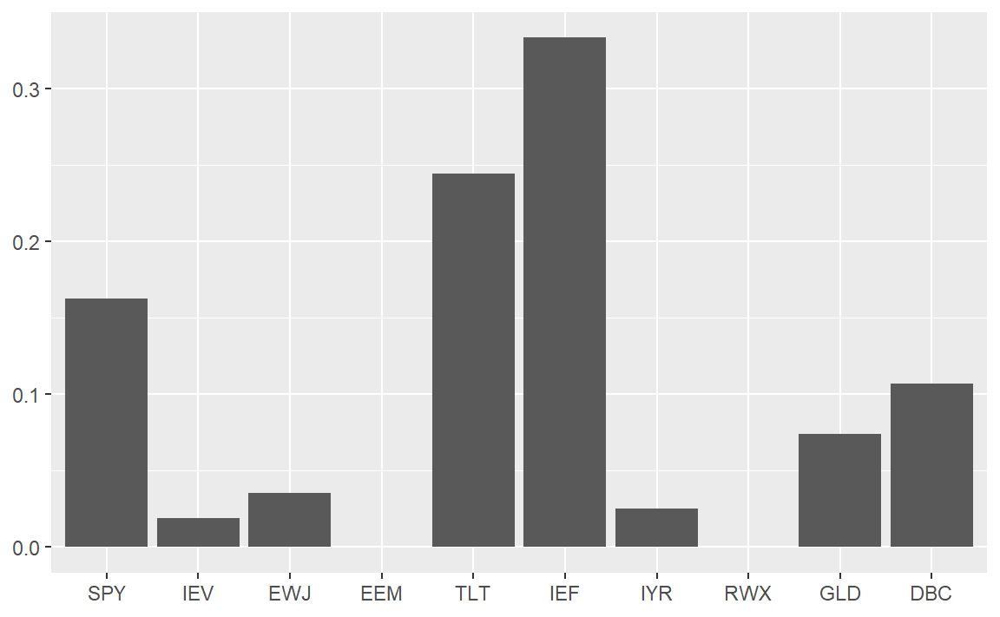
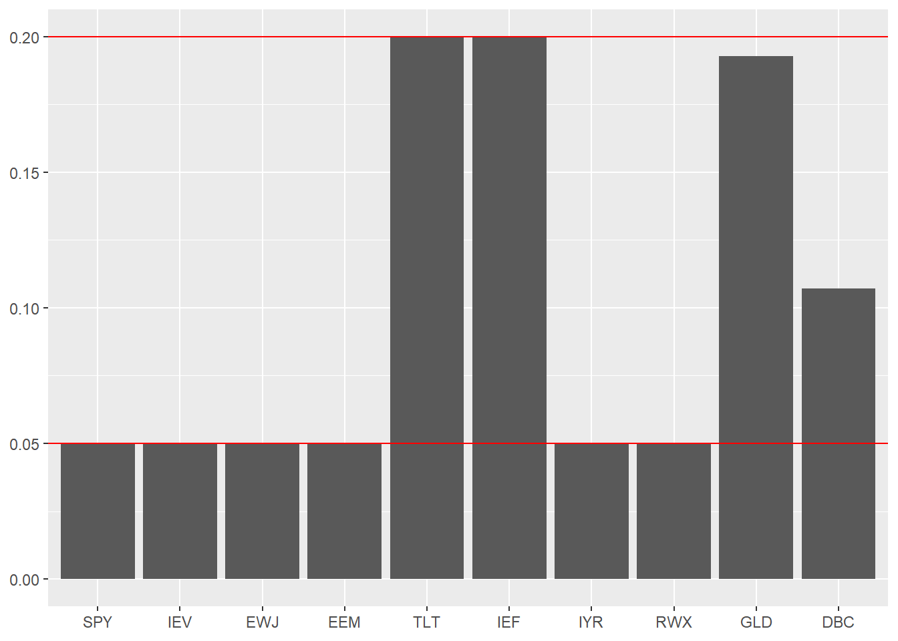

Chapter 11 포트폴리오 구성
종목의 선택 못지 않게 중요한 것이 포트폴리오를 구성하는 방법입니다. 종목별로 비중을 어떻게 배분하느냐에 따라 성과가 달라질 수 있기 때문입니다. 최적 포트폴리오의 구성은 수식을 기반으로 최적화된 해를 찾습니다. 물론 엑셀의 해찾기와 같은 기능을 사용하여 간단한 형태의 최적화 구현이 가능하지만, 데이터가 방대해질 경우에는 속도가 지나치게 느려져 효율적이지 않습니다.
동일한 최적화 방법을 지속적으로 사용할 경우 프로그래밍을 통해 함수를 만들고, 입력 변수만 변경하는 것이 훨씬 효율적인 방법입니다. 또한 포트폴리오 최적화에 관한 좋은 패키지들이 이미 많이 나와 있으므로, 대략적인 내용만 이해하고 실제 구현은 패키지를 이용하는 것도 유용한 방법입니다.
본 장에서는 일반적으로 많이 쓰이는 최소분산 포트폴리오, 최대분산효과 포트폴리오, 위험균형 포트폴리오를 구현해보도록 합니다. 먼저 포트폴리오 구성을 위해 글로벌 자산을 대표하는 ETF 데이터를 다운로드 받도록 하겠습니다.
library(quantmod)
library(PerformanceAnalytics)
library(magrittr)
symbols = c('SPY', # 미국 주식: SPDR S&P 500 ETF
'IEV', # 유럽 주식: iShares Europe ETF
'EWJ', # 일본 주식: iShares Europe ETF
'EEM', # 이머징 주식: iShares MSCI Emerging Markets ETF
'TLT', # 미국 장기채: iShares 20+ Year Treasury Bond ETF
'IEF', # 미국 중기채: iShares 7-10 Year Treasury Bond ETF
'IYR', # 미국 리츠: iShares U.S. Real Estate ETF
'RWX', # 글로벌 리츠: SPDR Dow Jones International Real Estate ETF
'GLD', # 금: SPDR Gold Shares
'DBC' # 상품: Invesco DB Commodity Index Tracking Fund
)
getSymbols(symbols, src = 'yahoo')
prices = do.call(cbind, lapply(symbols, function(x) Ad(get(x)))) %>%
setNames(symbols)
rets = Return.calculate(prices) %>% na.omit()getSymbols() 함수를 통해 일반적으로 자산배분에서 많이 사용되는 주식과 채권, 대체자산에 해당하는 ETF 가격 데이터를 받은 후, lapply()와 Ad(), get() 함수의 조합을 통해 수정주가 만을 선택하여 열의 형태로 묶어주도록 합니다. 그 후 Return.calculate() 함수를 통해 수익률을 계산 해줍니다.
library(tidyr)
library(dplyr)
library(corrplot)
cor(rets) %>%
corrplot(method = 'color', type = 'upper',
addCoef.col = 'black', number.cex = 0.7,
tl.cex = 0.6, tl.srt=45, tl.col = 'black',
col = colorRampPalette(c('blue', 'white', 'red'))(200),
mar = c(0,0,0.5,0))
각 ETF의 수익률 간 상관관계를 살펴보면 같은 자산군 내에서는 강한 상관관계가가 보이며, 주식과 채권 간에는 매우 낮은 상관관계를 보입니다. 또한 주식과 리츠 간에도 꽤 높은 상관관계를 보입니다.
포트폴리오 최적화에는 분산-공분산 행렬이 대부분 사용되며, 이는 cov() 함수를 통해 손쉽게 계산할 수 있습니다.
covmat = cov(rets)11.1 최소분산 포트폴리오
최소분산 포트폴리오(Minimum Variance Portfolio)는 변동성이 최소인 포트폴리오 입니다. 포트폴리오의 변동성은 일반적으로 \(\sum_{i=1}^{n}\sum_{j=1}^{n}w_iw_j\sigma_{ij}\)의 형태로 표현되지만, 최적화 작업을 위해서는 행렬의 형태인 \(w'\Omega w\)로 표현하는 것이 더욱 편리합니다. 이 중 \(w\)는 각 자산들의 비중을 행렬의 형태로 나타낸 것이며, \(\Omega\)는 각 자산 별 분산-공분산 행렬을 나타낸 것입니다. 분산-공분산 행렬은 사전에 고정되어 있는 값이므로, 각 자산들의 비중인 \(w\)를 변화시킴으로써 포트폴리오의 변동성이 최소인 지점을 찾을 수 있습니다.
최소분산 포트폴리오의 목적함수는 아래의 수식으로 표현할 수 있습니다. 이 중 \(^1/_2\)은 단지 미분했을 때 계산을 용이하게 하기 위한 장치일 뿐 결과에는 영향을 미치지 않습니다.
\[ 최소분산\,포트폴리오의\,목적함수: min\,^1/_2\,w'\Omega w \]
다만 단순히 위의 목적함수를 찾는 해를 구할 경우 결과 값이 음수가 나오기도 하며, 이는 공매도를 의미합니다. 일반적으로 공매도가 불가능하다는 점과, 투자 비중의 합이 100%가 되어야 한다는 점을 고려하면 아래와 같은 제약조건을 추가해야 합니다.
\[ 최소분산\,포트폴리오의\,제약조건: \sum_{i=1}^{n}w_i = 1, w_i \ge 0 \] 물론 이 외에도 각 섹터의 투자비중 합에 대한 제약, 회전율에 대한 제약 등도 추가할 수 있습니다. 그러나 이는 코드가 지나치게 복잡해지며, 정확한 계산을 위해서는 좀 더 전문화된 프로그램을 사용할 필요가 있으므로 해당 책에서는 다루지 않도록 하겠습니다.
11.1.1 slsqp() 함수를 이용한 최적화
R에서 가장 손쉽게 최적화 작업을 수행하는 방법은 nloptr 패키지의 slsqp() 함수를 이용하는 법입니다. 해당 함수는 순차적 이차 계획(Sequential quadratic programming)을 이용하여 해를 찾으며, 목적함수와 제약조건은 아래와 같습니다.
| 목적함수 | 제약조건 |
|---|---|
| \(min\,f(x)\) | \(b(x)\ge0\) \(c(x)=0\) |
목적함수에서 \(f(x)\) 는 최소화 하고자 하는 값, 즉 포트폴리오의 변동성입니다. 제약조건은 크게 개별 자산의 투자 비중이 0 이상인 것과, 투자 비중의 합이 1이 되도록 하는 것입니다. 첫번째 제약조건은 자연스럽게 개별 자산의 투자 비중이 0 이상인 것을 의미합니다. 두 번째 제약조건은 약간의 변형을 통해 투자 비중의 합이 1이 되는 제약조건을 만들 수 있습니다. c(x)를 ‘투자 비중의 합 – 1’ 로 변형할 경우, -1을 우변으로 넘기면 결국 ‘투자 비중의 합 = 1’ 의 형태로 나타낼 수 있습니다. slsqp() 함수의 구성은 다음과 같습니다.
slsqp(x0, fn, gr = NULL, lower = NULL, upper = NULL,
hin = NULL, hinjac = NULL, heq = NULL, heqjac = NULL,
nl.info = FALSE, control = list(), ...)이 중 우리가 구체적으로 입력해야 할 값은 x0, fn, hin, heq 항목 입니다.
- x0는 초기 시작값으로써, 일반적으로 모든 x에 대해 동일한 값을 입력합니다.
- fn은 최소화 하고자 하는 목적함수로써, 포트폴리오의 변동성에 해당합니다.
- hin은 부등위 제약조건(inequality constraints)을 의미하며, 프로그래밍 내에서는 hin >= 0 로 인식하며, 각 자산의 비중이 0보다 크다는 제약조건과 연결됩니다.
- heq는 등위 제약조건(equality constraints)을 의미하며 프로그래밍 내에서는 heq == 0을 의미합니다. ’투자 비중의 합 - 1’의 형태를 입력 할 경우, 투자 비중의 합이 1이 라는 제약조건과 연결됩니다.
표 11.1는 최소분산 포트폴리오를 구할 때 필요한 주요 변수에 대한 내용입니다.
| 변수명 | 내용 | 포트폴리오 내 변수 |
|---|---|---|
| x0 | 초기값 | - |
| fn | 목적함수 | 포트폴리오 변동성 |
| hin | 부등위 제약조건 | 각 자산의 비중이 0 보다 큰 제약조건 |
| heq | 등위 제약조건 | 투자 비중의 합이 1인 제약조건 |
slsqp() 함수를 이용하여 최소분산 포트폴리오를 만족하는 자산의 투자 비중을 구하는 과정은 다음과 같습니다. 먼저 fn, hin, heq에 해당하는 함수들을 각각 만들어 준 후, 이를 slsqp() 함수와 결합하여 최적화된 결과값을 얻을 수 있습니다. 구체적인 과정은 아래와 같습니다.
objective = function(w) {
obj = t(w) %*% covmat %*% w
return(obj)
}먼저 목적함수에 해당하는 부분입니다. covmat은 사전에 계산된 분산-공분산 행렬이며, \(w\)는 각 자산의 투자 비중입니다. obj는 포트폴리오의 변동성인 \(w'\Omega w\)를 계산한 것입니다. 즉, 해당 함수는 계산된 \(w\)를 바탕으로 포트폴리오의 변동성을 반환하고, 우리의 목적은 해당 값이 최소가 되도록 하는 것입니다.
hin.objective = function(w) {
return(w)
}\(w_i \ge 0\) 제약조건에 해당하는 부등위 제약조건입니다. 패키지 내에서는 hin >= 0 의 형태로 인식을 하므로, 계산된 비중인 \(w\)를 단순히 입력하기만 하면 됩니다.
heq.objective = function(w) {
sum_w = sum(w)
return( sum_w - 1 )
}\(\sum_{i=1}^{n}w_i = 1\) 제약조건에 해당하는 등위 제약조건입니다. 먼저 계산된 비중인 \(w\)들의 합계를 구한 후, 해당 값에서 1을 빼주는 값을 반환하도록 합니다. 프로그래밍 내에서는 heq == 0 의 형태로 인식을 하므로, 결국 (sum_w – 1) == 0, 즉 sum_w == 1 의 제약조건과 동일하게 됩니다.
library(nloptr)
result = slsqp( x0 = rep(0.1, 10),
fn = objective,
hin = hin.objective,
heq = heq.objective)
print(result)## $par
## [1] 1.529389e-01 -3.785834e-18 -1.754307e-17 -3.639632e-19 -2.276099e-18
## [6] 7.844576e-01 4.289285e-18 1.248200e-17 -3.338117e-19 6.260344e-02
##
## $value
## [1] 9.697801e-06
##
## $iter
## [1] 139
##
## $convergence
## [1] 4
##
## $message
## [1] "NLOPT_XTOL_REACHED: Optimization stopped because xtol_rel or xtol_abs (above) was reached."위에서 만들어진 함수들을 바탕으로 최적화 작업을 실행합니다. 초기값인 x0에는 먼저 동일한 비중들을 입력합니다. 예제에서는 종목이 10개 이므로, x0값에는 rep(0.1, 10) 인 0.1, 0.1, 0.1, 0.1, 0.1, 0.1, 0.1, 0.1, 0.1, 0.1 가 입력됩니다. 최소화 하고자 하는 목적함수 fn에는 위에서 구성한 objective 함수를 입력합니다. 부등위 제약조건과 등위 제약조건에도 각각 위에서 구성한 hin.objective 함수와 heq.objective를 입력합니다.
즉, 해당 함수는 초기값을 시작점으로 하여 주어진 제약조건을 만족하는 해를 찾기 위해 \(w\)값들을 조정하는 작업을 반복한 후, 목적함수가 최소가 되는 지점의 \(w\)를 반환합니다.
result 값 중 $par는 최적화된 지점의 해를 의미하며, 여기서는 최소분산 포트폴리오를 구성하는 자산들의 투자 비중을 의미합니다. $value는 $par에서 산출된 값을 목적함수 fn에 입력하였을 때 나오는 결과값으로써, 여기서는 포트폴리오의 분산을 의미합니다.
w_1 = result$par %>% round(., 4) %>%
setNames(colnames(rets))
print(w_1)## SPY IEV EWJ EEM TLT IEF IYR RWX GLD DBC
## 0.1529 0.0000 0.0000 0.0000 0.0000 0.7845 0.0000 0.0000 0.0000 0.0626자산들의 투자비중은 result$par 를 통해 추출한 후, round() 함수를 이용하여 반올림을 하여 줍니다. 마지막으로 이름에 종목명을 입력해주도록 합니다. 계산된 비중으로 포트폴리오를 구성할 경우, 포트폴리오의 비중이 최소화 됩니다.
11.1.2 solve.QP() 함수를 이용한 최적화
다음으로는 quadprog 패키지 내의 solve.QP() 함수를 이용하여 포트폴리오 최적화를 하는 방법이 있습니다. 해당 함수는 쌍대기법(Dual Method)를 이용하여 제약조건 내에서 목적함수가 최소화 되는 해를 구합니다. 해당 함수의 목적함수와 제약조건은 표 11.2와 같습니다.
| 목적함수 | 제약조건 |
|---|---|
| \(min(-d^Tb+^1/_2b^TDb)\) | \(A^Tb \ge b_0\) |
최소분산 포트폴리오의 목적함수가 \(min\,^1/_2\,w'\Omega w\) 로 표시된다는 점을 생각하면, 해당 함수는 매우 이해하기 쉽게 구성되어 있습니다. b를 각 개별 자산의 투자 비중인 \(w\), D를 분산-공분산 행렬인 \(\Omega\)라 생각하면, 목적함수 중 \(min\,^1/_2\,wDw\)는 최소분산 포트폴리오의 목적함수와 정확히 동일합니다. d를 0으로 생각할 경우 \(-d^Tb\) 또한 0이 되어 목적함수에 아무런 영향도 미치지 않습니다.
제약조건 역시 \(A^T\) 항목을 적절하게 수정하여 준다면, 개별 자산의 투자 비중이 0 이상인 것과, 투자 비중의 합이 1이 되도록 만들 수 있습니다. 이에 대해서는 뒤에서 구체적으로 다루도록 합니다. solve.QP() 함수의 사용법은 아래와 같습니다.
solve.QP(Dmat, dvec, Amat, bvec, meq = 0, factorized = FALSE)- Dmat은 목적함수 중 D에 해당하는 행렬부분으로써 분산-공분산 행렬과 일치합니다.
- dvec은 목적함수 중 d에 해당하는 벡터부분이며, 포트폴리오 최적화에서는 역할이 없습니다.
- Amat은 제약조건 중 \(A^T\)에 해당하는 부분으로써, 제약조건 중 좌변에 위치하는 항목입니다. 주의할 점은 제약조건에서 보듯이 제약조건 행렬을 구한 후 이의 전치(Transpose)행렬을 입력해야 합니다.
- bvec은 제약조건 중 b_0에 해당하는 부분으로써, 제약조건 중 우변에 위치하는 항목입니다.
- meq는 bvec의 몇번째 까지를 등위 제약조건으로 설정할지에 대한 부분입니다.
표 11.3는 위의 내용을 요약한 것이며, 각 변수를 입력한 후 함수를 실행할 경우 위의 목적함수와 제약조건을 만족하는 b값을 찾습니다.
| 변수명 | 내용 | 포트폴리오 내 변수 |
|---|---|---|
| Dmat | 목적함수 중 D | 분산-공분산 행렬 |
| dvec | 목적함수 중 d | 해당사항 없음 |
| Amat | 제약조건 (좌변) | \(\sum_{i=1}^{n}w_i, w_i\) |
| bvec | 제약조건 (우변) | 각 비중이 0보다 큼, 비중의 합이 1 |
| meq | 등위 제약조건 개수 | 1개 (비중의 합이 1) |
solve.QP() 함수를 이용하여 최소분산 포트폴리오 비중을 구할 때는 Amat 항목을 제대로 입력하는 것이 가장 중요하며, 나머지 항목은 매우 손쉽게 입력이 가능합니다. 설명된 내용에 해당하는 행렬을 손으로 직접 써가며 계산해 보신다면 훨씬 이해하기가 쉬울 것입니다. 구체적인 과정은 아래와 같습니다.
Dmat = covmat
dvec = rep(0, 10)
Amat = t(rbind(rep(1, 10), diag(10), -diag(10)))
bvec = c(1, rep(0, 10), -rep(1, 10))
meq = 1Dmat에는 분산-공분산 행렬을 입력하며, dvec은 최소분산 포트폴리오를 구하는데는 필요한 값이 아니므로 0벡터를 입력 합니다. 등위 제약조건과 부등위 제약조건(\(A^Tb \ge b_0\))을 행렬의 형태로 표현하면 다음과 같습니다.
\[ \begin{bmatrix} 1 & 1 & \dots & 1 \\ 1 & 0 & \dots & 0 \\ \vdots & \vdots & \ddots & \vdots \\ 0 & 0 & \dots & 1 \\ -1 & 0 & \dots & 0 \\ \vdots & \vdots & \ddots & \vdots \\ 0 & 0 & \dots & -1 \\ \end{bmatrix} \begin{bmatrix} w_1 \\ w_2 \\ \vdots \\ w_{10} \end{bmatrix} = \begin{bmatrix} w_1 + w_2 + \dots + w_{10} \\ w_1 \\ \vdots \\ w_{10} \\ -w_1 \\ \vdots \\ -w_{10} \end{bmatrix} \ge \begin{bmatrix} 1 \\ 0 \\ \vdots \\ 0 \\ -1 \\ \vdots \\ -1 \end{bmatrix} \]
이 중, 맨 좌측 행렬의 전치행렬이 제약조건의 좌변인 Amat에 해당합니다.
\[ Amat = \begin{bmatrix} 1 & 1 & \dots & 1 \\ 1 & 0 & \dots & 0 \\ \vdots & \vdots & \ddots & \vdots \\ 0 & 0 & \dots & 1 \\ -1 & 0 & \dots & 0 \\ \vdots & \vdots & \ddots & \vdots \\ 0 & 0 & \dots & -1 \end{bmatrix} ^T \]
맨 우측 행렬이 제약조건의 우변인 bvec에 해당합니다. \[ bvec = \begin{bmatrix} 1 \\ 0 \\ \vdots \\ 0 \\ -1 \\ \vdots \\ -1 \end{bmatrix} \]
위의 제약조건은 크게 투자 비중의 합이 1인 제약조건, 최소 투자 비중이 0 이상인 제약조건, 최대 투자 비중이 1 이하인 제약조건, 총 3개 부분으로 나눌 수 있습니다.
\[ (1)\; \sum_{i = 1}^nw_i = 1 \Rightarrow \begin{bmatrix} w_1 + w_2 + \dots \ w_{10} \end{bmatrix} = \begin{bmatrix} 1 \end{bmatrix} \\ (2)\; w_i \ge 0 \Rightarrow \begin{bmatrix} w_1 \\ w_2 \\ \vdots \\ w_{10} \end{bmatrix} \ge \begin{bmatrix} 0 \\ 0 \\ \vdots \\ 0 \end{bmatrix} \\ (3)\;-w_i \ge -1 \Rightarrow \begin{bmatrix} -w_1 \\ -w_2 \\ \vdots \\ -w_{10} \end{bmatrix} \ge \begin{bmatrix} -1 \\ -1 \\ \vdots \\ -1 \end{bmatrix} \]
solve.QP() 함수의 제약조건은 항상 좌변이 큰 형태이므로, 최대 투자 비중에 대한 제약 조건의 경우 다음 행렬의 양변에 마이너스(-)를 곱하여 부등호를 맞춰주었습니다.
\[\begin{bmatrix} w_1 \\ w_2 \\ \vdots \\ w_{10} \end{bmatrix} \le \begin{bmatrix} 1 \\ 1 \\ \vdots \\ 1 \end{bmatrix}\]
첫번째 제약조건은 부등호가 아닌 등호, 즉 투자 비중의 합이 1인 조건을 의미하므로 meq = 1을 통해 첫번째 제약조건은 등식 제약조건임을 선언할 수 있습니다.
제약조건의 좌변에 해당하는 Amat을 만드는 과정은 다음과 같습니다. 먼저 rep(1, 10)를 통해 최상단에 위치한 1로 이루어진 행렬을 만들어줍니다.
\[\begin{bmatrix} 1 & 1 & \dots & 1 \end{bmatrix}\]
하단의 1과 -1로 이루어진 대각행렬은 diag() 함수를 통해 쉽게 만들 수 있습니다.
\[
diag(10) = \begin{bmatrix} 1 & \dots & 0 \\ \vdots & \ddots & \vdots \\ 0 & \dots &\ 1\end{bmatrix} \\
-diag(10) = \begin{bmatrix} -1 & \dots & 0 \\ \vdots & \ddots & \vdots \\ 0 & \dots &\ -1\end{bmatrix}
\]
세 개의 행렬을 rbind() 함수를 통해 행으로 묶어주면 제약조건의 맨 좌측 행렬과 동일한 형태가 됩니다. 이를 t() 함수를 통해 전치행렬을 만들어 준 뒤 Amat에 입력합니다.
제약조건에 해당하는 bvec은 1, 0으로 이루어진 벡터, -1로 이루어진 벡터를 통해 손쉽게 만들 수 있습니다.
library(quadprog)
result = solve.QP(Dmat, dvec, Amat, bvec, meq)
print(result)## $solution
## [1] 1.529389e-01 -5.585486e-18 3.501337e-19 3.704057e-18 -6.027648e-17
## [6] 7.844576e-01 -3.979972e-19 -5.225962e-18 0.000000e+00 6.260344e-02
##
## $value
## [1] 4.8489e-06
##
## $unconstrained.solution
## [1] 0 0 0 0 0 0 0 0 0 0
##
## $iterations
## [1] 9 0
##
## $Lagrangian
## [1] 9.697801e-06 0.000000e+00 1.462567e-06 1.024397e-06 5.206227e-06
## [6] 8.078963e-06 0.000000e+00 6.651101e-06 1.275822e-06 5.006650e-07
## [11] 0.000000e+00 0.000000e+00 0.000000e+00 0.000000e+00 0.000000e+00
## [16] 0.000000e+00 0.000000e+00 0.000000e+00 0.000000e+00 0.000000e+00
## [21] 0.000000e+00
##
## $iact
## [1] 1 6 5 8 3 9 4 10위에 입력된 내역들을 solve.QP() 함수에 넣어 최적화 값을 찾아줍니다. 위의 코드를 실행한 후 result를 입력하면 다음과 같은 결과값을 확인할 수 있습니다. 결과 중 $solution은 최적화된 지점의 해, 즉 최소분산 포트폴리오를 구성하는 자산들의 투자 비중을 의미합니다. $value는 $solution에서 산출된 값을 목적함수에 입력하였을 때 나오는 결과값으로써, 포트폴리오의 분산을 의미합니다.
w_2 = result$solution %>% round(., 4) %>%
setNames(colnames(rets))
print(w_2)## SPY IEV EWJ EEM TLT IEF IYR RWX GLD DBC
## 0.1529 0.0000 0.0000 0.0000 0.0000 0.7845 0.0000 0.0000 0.0000 0.0626자산들의 투자비중은 result$solution 을 통해 추출한 후, round() 함수를 이용하여 반올림을 하여 줍니다. 마지막으로 이름에 종목명을 입력해주도록 합니다. 계산된 비중으로 포트폴리오를 구성할 경우, 포트폴리오의 비중이 최소화 됩니다.
11.1.3 optimalPortfolio() 함수를 이용한 최적화
RiskPortfolios 패키지의 optimalPortfolio() 함수를 이용하여 매우 간단하게 최적화 포트폴리오를 구현할 수도 있습니다. 해당 함수의 사용법은 아래와 같습니다.
optimalPortfolio(Sigma, mu = NULL, semiDev = NULL, control = list())Sigma는 분산-공분산 행렬입니다. mu와 semiDev는 각각 기대수익률과 세미 편차(semi deviation)로써, 입력하지 않아도 됩니다. control은 포트폴리오 종류 및 제약조건에 해당하는 부분이며, 자세한 내용은 표 11.4와 같습니다.
| 종류 | 입력값 | 내용 |
|---|---|---|
| type | minvol | 최소분산 포트폴리오 |
| type | invvol | 역변동성 포트폴리오 |
| type | erc | 위험 균형 포트폴리오 |
| type | maxdiv | 최대 분산효과 포트폴리오 |
| type | riskeff | 위험-효율적 포트폴리오 |
| constraint | lo | 최소 투자 비중이 0 보다 클것 |
| constraint | user | 최소(LB) 및 최대 투자 비중(UB) 설정 |
control 항목에서 원하는 포트폴리오 타입과 제약조건을 입력해주면, 매우 손쉽게 최적화 포트폴리오를 구현할 수 있습니다.
library(RiskPortfolios)
w_3 = optimalPortfolio(covmat, control = list(type = 'minvol', constraint = 'lo')) %>%
round(., 4) %>%
setNames(colnames(rets))
print(w_3) ## SPY IEV EWJ EEM TLT IEF IYR RWX GLD DBC
## 0.1529 0.0000 0.0000 0.0000 0.0000 0.7845 0.0000 0.0000 0.0000 0.0626optimalPortfolio() 함수 내부에 분산-공분산 행렬을 입력합니다. type 부분에 최소분산 포트폴리오에 해당하는 ’minvol’을 입력하며, constraint에는 각 자산의 비중이 0보다 큰 제약조건인 ’lo(Long Only)’를 입력합니다. 비중의 합이 1인 제약조건은 자동적으로 적용이 됩니다.
이처럼 패키지를 이용할 경우 매우 훨씬 간단하게 원하는 값을 얻을 수 있습니다. github를 통해 해당 함수의 코드를 살펴보면 solve.QP()를 이용하여 작성한 방법과 거의 동일합니다. 따라서 위의 과정들을 대략적으로 이해한 후, 패키지를 사용하여 포트폴리오 최적화를 구현하는 것이 현명한 방법이 될 수도 있습니다.
11.1.4 결과값들의 비교
아래 표는 slsqp(), solve.QP(), optimalPortfolio()를 이용하여 구한 값들의 비교입니다.
| SPY | IEV | EWJ | EEM | TLT | IEF | IYR | RWX | GLD | DBC | |
|---|---|---|---|---|---|---|---|---|---|---|
| slsqp | 0.1529 | 0 | 0 | 0 | 0 | 0.7845 | 0 | 0 | 0 | 0.0626 |
| solve.QP | 0.1529 | 0 | 0 | 0 | 0 | 0.7845 | 0 | 0 | 0 | 0.0626 |
| optimalPortfolio | 0.1529 | 0 | 0 | 0 | 0 | 0.7845 | 0 | 0 | 0 | 0.0626 |
3가지 방법 모두 결과가 동일합니다. 그러나 여기서 나온 결과를 이용하여 그대로 투자하기에는 문제가 있습니다. 일부 자산은 투자비중이 0%, 즉 전혀 투자를 하지 않는 반면, 특정 자산에 대부분의 비중인 78.45%를 투자를 하는 편중된 결과가 나옵니다.
library(ggplot2)
data.frame(w_1) %>%
ggplot(aes(x = factor(rownames(.), levels = rownames(.)),
y = w_1)) +
geom_col() +
xlab(NULL) + ylab(NULL)
이처럼 변동성이 가장 낮은 종목에 대부분의 비중이 투자되는 구석해(Corner Solution) 문제를 해결하기 위해 각 자산의 최소 및 최대 투자 비중 제약조건을 추가해 줄 필요가 있습니다.
11.1.5 최소 및 최대 투자비중 제약조건
구석해 문제를 방지하고, 모든 자산에 골고루 투자하기 위해 개별 투자비중을 최소 5%, 최대 20%로 하는 제약조건을 추가해 주도록 하겠습니다. 먼저 slsqp() 함수에서 제약조건을 추가하는 방법은 다음과 같습니다.
result = slsqp( x0 = rep(0.1, 10),
fn = objective,
hin = hin.objective,
heq = heq.objective,
lower = rep(0.05, 10),
upper = rep(0.20, 10))
w_4 = result$par %>% round(., 4) %>%
setNames(colnames(rets))
print(w_4)## SPY IEV EWJ EEM TLT IEF IYR RWX GLD DBC
## 0.05 0.05 0.05 0.05 0.20 0.20 0.05 0.05 0.20 0.10함수의 마지막에 lower와 upper 인자를 추가로 입력할 경우, 해당 값 사이에서 최적화를 만족하는 해를 찾게 되며, 해당 예에서는 5%와 20% 사이에서 해를 찾게 됩니다. 추가로 입력한 제약조건에 맞게, 최소 투자비중은 5%이며, 최대 투자비중은 20%임을 확인할 수 있습니다.
다음은 solve.QP() 함수 내에서 제약조건을 추가하는 방법입니다. 해당 함수 역시 다른 입력값은 모두 동일하며, 제약조건의 우변에 해당하는 bvec 항목만 수정하면 됩니다. 최소, 최대 투자비중 제약 조건을 기존 [0, 1]에서 [0.05, 0.20] 로 변경하면, bvec에 해당하는 행렬은 다음과 같이 변경됩니다.
\[ 기존: \begin{bmatrix} w_1 + w_2 + \dots + w_{10} \\ w_1 \\ \vdots \\ w_{10} \\ -w_1 \\ \vdots \\ -w_{10} \end{bmatrix} \ge \begin{bmatrix} 1 \\ 0 \\ \vdots \\ 0 \\ -1 \\ \vdots \\ -1 \end{bmatrix} \\ 변경: \begin{bmatrix} w_1 + w_2 + \dots + w_{10} \\ w_1 \\ \vdots \\ w_{10} \\ -w_1 \\ \vdots \\ -w_{10} \end{bmatrix} \ge \begin{bmatrix} 1 \\ 0.05 \\ \vdots \\ 0.05 \\ -0.20 \\ \vdots \\ -0.20 \end{bmatrix} \]
Dmat = covmat
dvec = rep(0, 10)
Amat = t(rbind(rep(1, 10), diag(10), -diag(10)))
bvec = c(1, rep(0.05, 10), -rep(0.20, 10))
meq = 1
result = solve.QP(Dmat, dvec, Amat, bvec, meq)
w_5 = result$solution %>% round(., 4) %>%
setNames(colnames(rets))
print(w_5)## SPY IEV EWJ EEM TLT IEF IYR RWX GLD DBC
## 0.05 0.05 0.05 0.05 0.20 0.20 0.05 0.05 0.20 0.10bvec 항목을 제외한 모든 코드는 기존과 동일하며, 조건함수의 우변인 bvec만 각각 최소 투자비중과 최대 투자비중이 [0, 1]에서 [0.05, 0.20]으로 변경되었습니다. 해당 방법 역시 추가적인 투자비중 제약이 잘 적용되었음이 확인됩니다.
마지막으로 optimalPortfolio() 함수 내에서 최소 및 최대 투자비중을 추가하는 방법입니다. 입력변수의 control 항목 중 constraint 부분을 간단하게 수정하여 원하는 조건을 입력할 수 있습니다.
w_6 = optimalPortfolio(covmat, control = list(type = 'minvol', constraint = 'user',
LB = rep(0.05, 10), UB = rep(0.20, 10))) %>%
round(., 4) %>%
setNames(colnames(rets))
print(w_6)## SPY IEV EWJ EEM TLT IEF IYR RWX GLD DBC
## 0.05 0.05 0.05 0.05 0.20 0.20 0.05 0.05 0.20 0.10constraint 부분에 롱온리 제약조건에 해당하는 ‘lo’ 대신 직접 제약값들을 입력할 수 있는 ’user’를 입력하며, LB에는 최소 투자비중 벡터를, UB에는 최대 투자비중 벡터를 입력합니다. 결과적으로 원하는 제약조건 내에서 결과값이 계산됩니다.
| SPY | IEV | EWJ | EEM | TLT | IEF | IYR | RWX | GLD | DBC | |
|---|---|---|---|---|---|---|---|---|---|---|
| slsqp | 0.05 | 0.05 | 0.05 | 0.05 | 0.2 | 0.2 | 0.05 | 0.05 | 0.2 | 0.1 |
| solve.QP | 0.05 | 0.05 | 0.05 | 0.05 | 0.2 | 0.2 | 0.05 | 0.05 | 0.2 | 0.1 |
| optimalPortfolio | 0.05 | 0.05 | 0.05 | 0.05 | 0.2 | 0.2 | 0.05 | 0.05 | 0.2 | 0.1 |
최소 및 최대 제약 조건을 추가한 경우도, 3가지 방법 모두 동일한 결과가 나오게되며, 최소 및 최대 투자비중도 각각 5%와 20%로 제한되어 구석해 문제 또한 해결되었음이 확인됩니다.
data.frame(w_4) %>%
ggplot(aes(x = factor(rownames(.), levels = rownames(.)),
y = w_4)) +
geom_col() +
geom_hline(aes(yintercept = 0.05), color = 'red') +
geom_hline(aes(yintercept = 0.20), color = 'red') +
xlab(NULL) + ylab(NULL)
11.1.6 각 자산 별 제약조건의 추가
투자 규모가 크지 않을 경우에는 위에서 추가한 제약조건 만으로도 충분히 훌륭한 포트폴리오가 구성됩니다. 그러나 투자 규모가 커질 경우 추가적인 제약조건들을 고려해야 할 경우가 생깁니다. 벤치마크 비중과의 괴리로 인한 추적오차(Tracking Error)을 고려해야 할 수도 있고, 투자 대상 별 거래량을 고려한 제약조건을 추가해야 할 경우도 있습니다.
기존 제약조건에는 자산 별로 동일한 최소 및 최대 투자비중 제약조건을 다루었지만, 자산 별로 상이한 제약조건이 필요할 경우도 있습니다. slsqp()와 optimalPortfolio() 함수에서는 복잡한 제약조건을 다루기가 힘들지만, solve.QP() 함수의 경우 bvec 부분을 간단하게 수정하여 어렵지 않게 구현이 가능합니다.
먼저 표 11.7는 새롭게 설정하고자 하는 각 자산 별 최소 및 최대 제약조건 입니다.
| 제약 | 1 | 2 | 3 | 4 | 5 | 6 | 7 | 8 | 9 | 10 |
|---|---|---|---|---|---|---|---|---|---|---|
| 최소 | 0.10 | 0.10 | 0.05 | 0.05 | 0.10 | 0.10 | 0.05 | 0.05 | 0.03 | 0.03 |
| 최대 | 0.25 | 0.25 | 0.20 | 0.20 | 0.20 | 0.20 | 0.10 | 0.10 | 0.08 | 0.08 |
이를 행렬의 형태로 나타내면 다음과 같습니다.
\[ \begin{bmatrix} 1 & 1 & \dots & 1 \\ 1 & 0 & \dots & 0 \\ \vdots & \vdots & \ddots & \vdots \\ 0 & 0 & \dots & 1 \\ -1 & 0 & \dots & 0 \\ \vdots & \vdots & \ddots & \vdots \\ 0 & 0 & \dots & -1 \\ \end{bmatrix} \begin{bmatrix} w_1 \\ w_2 \\ \vdots \\ w_{10} \end{bmatrix} = \begin{bmatrix} w_1 + w_2 + \dots + w_{10} \\ w_1 \\ w_2 \\ w_3 \\ w_4 \\ w_5 \\ w_6 \\ w_7\\ w_8\\ w_9\\ w_{10} \\ -w_1 \\ -w_2 \\ -w_3 \\ -w_4 \\ -w_5 \\ -w_6 \\ -w_7 \\ -w_8 \\ -w_9 \\ -w_{10} \end{bmatrix} \ge \begin{bmatrix} 1 \\ 0.10 \\ 0.10 \\ 0.05 \\ 0.05 \\ 0.10 \\ 0.10 \\ 0.05 \\ 0.05 \\ 0.03 \\ 0.03 \\ -0.25 \\ -0.25 \\ -0.20 \\ -0.20 \\ -0.20 \\ -0.20 \\ -0.10 \\ -0.10 \\ -0.08 \\ -0.08 \end{bmatrix} \]
위의 행렬 중 우측 부분을 bvec에 그대로 입력해 주도록 합니다.
Dmat = covmat
dvec = rep(0, 10)
Amat = t(rbind(rep(1, 10), diag(10), -diag(10)))
bvec = c(1, c(0.10, 0.10, 0.05, 0.05, 0.10, 0.10, 0.05, 0.05, 0.03, 0.03),
-c(0.25, 0.25, 0.20, 0.20, 0.20, 0.20, 0.10, 0.10, 0.08, 0.08))
meq = 1
result = solve.QP(Dmat, dvec, Amat, bvec, meq)
result$solution %>%
round(., 4) %>%
setNames(colnames(rets))## SPY IEV EWJ EEM TLT IEF IYR RWX GLD DBC
## 0.14 0.10 0.05 0.05 0.20 0.20 0.05 0.05 0.08 0.08결과값을 확인해보면, 각 자산 별 제약조건 내에 위치함을 확인할 수 있습니다.
11.2 최대분산효과 포트폴리오
앞서 설명했듯이 포트폴리오의 변동성은 \(\sum_{i=1}^{n}\sum_{j=1}^{n}w_iw_j\sigma_{ij}\) 형태로 나타나며, 이는 다음과 같이 표현할 수도 있습니다.
\[\sigma_p^2 = \sum_{i=1}^{n}\sum_{j=1}^{n}w_iw_j\sigma_{ij} = \sum_{i=1}^nw_i^2\sigma_i^2 + \sum_{i=1}^{n}\sum_{i \ne j}^{n}w_iw_j\rho_{ij}\sigma_i\sigma_j \]
이 중 \(\sum_{i=1}^{n}\sum_{i \ne j}^{n}w_iw_j\rho_{ij}\sigma_i\sigma_j\) 부분에는 자산 간 상관관계가 포함되어 있습니다. 상관관계는 -1과 1 사이에 위치하며, 자산 간 상관관계가 낮을수록 포트폴리오의 변동성 역시 낮아지게 됩니다. 상관관계가 1, 즉 두 자산이 완벽하게 동일한 경우에는 포트폴리오의 변동성은 개별 자산 변동성의 가중합과 같습니다. 그러나 상관관계가 낮아질수록 포트폴리오의 변동성 또한 점차 낮아집니다. 이러한 효과를 투자에서는 분산효과라 합니다.
이러한 분산효과의 정도를 측정하는 지표가 분산 비율(DR: Diversification Ratio) 입니다. 분산 비율의 분자는 개별 변동성의 가중합이며, 분모는 포트폴리오의 변동성입니다. 이를 수식으로 나타내면 다음과 같습니다.
\[ 분산\,비율 = \frac{\sum w_i \sigma_i}{\sigma_p} = \frac{w'\sigma}{\sqrt{w'\Omega w}}\]
모든 자산 간의 상관관계가 1일 경우, 위의 예시에서 살펴본 것과 같이 포트폴리오의 변동성은 개별 자산 변동성의 가중합과 같아지게 됩니다. 즉, \(\sum w_i \sigma_i = \sigma_p\)가 되어, 분산 비율은 1이 됩니다. 그러나 대부분의 경우에서 자산 간의 상관관계는 1보다 낮으며, 이로 인해 포트폴리오의 분산은 단순 가중합 보다 작아지게 되고(\(\sigma_p < \sum w_i\sigma_i\)), 이로 인해 분산 비율은 1보다 커지게 됩니다.
자산 간 상관관계가 낮은 종목을 위주로 포트폴리오를 구성할 수록 분산효과로 인해 포트폴리오의 변동성은 낮아지게 되고, 분산 비율은 점점 커지게 됩니다. 최대분산 포트폴리오(Most Diversified Portfolio)는 이를 이용하여 분산효과가 최대가 되는, 즉 분산 비율이 최대가 되는 포트폴리오를 구성하는 방법입니다. 이에 대한 목적함수와 제약조건은 다음과 같습니다.
\[목적함수: max\,DR = max \frac{\sum w_i \sigma_i}{\sigma_p} \\ 제약조건: \sum_{i=1}^n w_i = 1, w_i \ge 0\]
최대분산효과 포트폴리오의 목적함수는 분산비율을 최대화하는데 있는 반면, 대부분의 최적화 프로그래밍은 목적함수를 최소화 하는 형태로 이루어집니다. 따라서 목적함수인 maxaDR을 최소화 형태로 바꿀 필요가 있으며 이는 세가지 방법이 있습니다.
먼저 Choueifaty Synthetic Asset Back-Transformation 방법은 목적함수 \(min\,w_s'cw_s\)와 제약조건 \(\sum_{i=1}^n w_i = 1, w_i \ge 0\)을 만족하는 자산 별 비중을 구합니다. 그 후, 구해진 비중을 각각의 표준편차로 나누어 주며, 비중의 합이 1이 되도록 표준화를 해줍니다. 이 중 주의할 점은 목적함수의 c가 우리가 지금까지 사용하던 분산-공분산 행렬이 아닌, 상관관계 행렬이라는 점입니다.
Duality 방법을 이용할 경우 목적함수는 최소분산 포트폴리오와 동일한 \(min^1/_2w'\sigma w\)이며, 제약조건만 \(\sum_{i=1}^n w_i \sigma_i = 1, w_i \ge 0\), 즉 개별 자산의 비중이 0보다 크고 개별 표준편차의 가중합이 1인 조건으로 바뀝니다. 그 후, 비중의 합이 1이 되도록 표준화를 해줍니다.
기존 두 방법이 수학적 증명에 의해 \(maxDR\)을 최소화의 형태로 풀어준 반면, 간단하게 목적함수를 \(min(-DR)\)의 형태로 바꾸어 풀 수도 있습니다. 표 11.2는 3가지 방법을 요약한 내용입니다.
| 방법 | 목적함수 | 제약조건 | 표준화 |
|---|---|---|---|
| Transformation | \(min\,w_s'cw_s\) | \(\sum_{i=1}^n w_i = 1\) \(w_i \ge 0\) |
비중을 각각의 표준편차로 나눈 후 비중의 합으로 표준화 |
| Duality | \(min\,^1/_2w'\sigma w\) | \(\sum_{i=1}^n w_i \sigma_i = 1\) \(w_i \ge 0\) |
비중의 합으로 표준화 |
| -DR | min(-DR) | \(\sum_{i=1}^n w_i = 1\) \(w_i \ge0\) |
불필요 |
11.2.1 solve.QP() 함수를 이용한 최적화
먼저 solve.QP() 함수를 이용하여 Duality 방법을 통해 최대분산효과 포트폴리오를 만족하는 해를 찾도록 하겠습니다.
Duality 방법에서 목적함수는 \(min\,^1/_2w'\sigma w\) 로 최소분산 포트폴리오와 동일하며, 제약조건은 \(\sum_{i=1}^n w_i \sigma_i = 1, w_i \ge 0\) 입니다. 제약조건 부분인 Amat과 bvec 부분을 입력할 때 이 부분을 고려하여 입력해야 합니다.
Dmat = covmat
dvec = rep(0, 10)
Amat = t(rbind(sqrt(diag(covmat)), diag(10)))
bvec = c(1, rep(0, 10))
meq = 1제약조건에 해당하는 Amat 부분과 bvec 부분은 최소분산 포트폴리오와 다소 다릅니다. 표 11.9에는 둘 간에 코드가 어떻게 다른지 나타나 있습니다.
| 인자 | 최소분산 포트폴리오 | 최대분산효과 포트폴리오 |
|---|---|---|
| Amat | t(rbind(rep(1, 10), diag(10), -diag(10))) | t(rbind(sqrt(diag(covmat)), diag(10))) |
| bvec | c(1, rep(0, 10), -rep(1, 10)) | c(1, rep(0, 10)) |
이해를 위해 Duality 방법의 제약조건을 행렬의 형태로 표현하면 다음과 같습니다.
\[ \begin{bmatrix} \sigma_1 & \sigma_2 & \dots & \sigma_{10} \\ 1 & 0 & \dots & 0 \\ \vdots & \vdots & \ddots & \vdots \\ 0 & 0 & \dots & 1 \end{bmatrix} \begin{bmatrix} w_1 \\ w_2 \\ \vdots \\ w_{10} \end{bmatrix} = \begin{bmatrix} \sigma_1w_1 + \sigma_2w_2 + \dots + \sigma_{10}w_{10} \\ w_1 \\ \vdots \\ w_{10} \\ \end{bmatrix} \ge \begin{bmatrix} 1 \\ 0 \\ \vdots \\ 0 \end{bmatrix} \]
1행의 \(\sigma_1w_1 + \sigma_2w_2 + \dots + \sigma_{10}w_{10}\) 부분은 \(\sum_{i=1}^n w_i \sigma_i = 1\)과 같으며, 해당 식은 등위제약조건으로써 \(\sum_{i=1}^n w_i \sigma_i = \sigma_1w_1 + \sigma_2w_2 + \dots + \sigma_{10}w_{10} = 1\)을 의미합니다. 2행부터 마지막 행까지는 모두 \(w_i \ge 0\) 조건으로써, 개별 자산의 투자 비중이 0보다 큰 조건을 의미합니다.
행렬의 맨좌측에 해당하는 Amat 부분은 각 자산의 표준편차로 이루어진 벡터 행렬과, 1로 이루어진 대각행렬로 구성되어 있습니다. 먼저 diag(covmat)을 통해 분산-공분산 부분에서 대각부분 즉 분산 부분만을 추출할 수 있습니다. 개별 자산의 분산인 \(\sigma_{i,i}\)의 경우 \(\sigma_i\sigma_i\rho_{1,1}\) 형태로 쓸 수 있으며, \(\rho_{1,1} = 1\)을 적용하면 \(\sigma_i^2\)와 같습니다. 따라서 대각부분 값에 제곱근을 계산하는 sqrt() 함수를 적용하면 각각의 표준편차만 남게 됩니다. 이를 diag(10)을 통해 만든 대각행렬과 행으로 묶어준 후, 전치행렬을 입력해 줍니다.
bvec의 경우 행렬의 맨우측과 같이 등위제약조건에 해당하는 1과 부등위제약조건에 해당하는 0들로 구성되어 있습니다. 차후에 표준화 과정을 거쳐야 하므로 개별 자산의 투자 비중이 1보다 작은 조건은 Duality 방법에서는 입력하지 않아도 됩니다.
result = solve.QP(Dmat, dvec, Amat, bvec, meq)
w = result$solution %>%
round(., 4) %>%
setNames(colnames(rets))
print(w)## SPY IEV EWJ EEM TLT IEF IYR RWX GLD
## 17.3779 2.3429 3.7611 0.0000 27.8116 36.2592 3.0243 0.0000 8.4122
## DBC
## 11.6106입력된 목적함수와 제약조건들을 바탕으로 solve.QP()를 통해 최적화를 수행한 후, 최대분산효과를 만족하는 해를 구해보면, 비중의 합이 1을 초과하게 됩니다. \(w_i = \frac{w_i}{\sum_{i=1}^nw_i}\) 를 통해 비중의 합이 1이 되도록 표준화를 해주도록 합니다.
w = (w / sum(w)) %>%
round(., 4)
print(w)## SPY IEV EWJ EEM TLT IEF IYR RWX GLD DBC
## 0.1571 0.0212 0.0340 0.0000 0.2515 0.3278 0.0273 0.0000 0.0761 0.1050표준화 과정을 통해 비중의 합이 1이 되었음이 확인됩니다.
data.frame(w) %>%
ggplot(aes(x = factor(rownames(.), levels = rownames(.)),
y = w)) +
geom_col() +
geom_col() +
xlab(NULL) + ylab(NULL)
11.2.2 optimalPortfolio() 함수를 이용한 최적화
최소분산 포트폴리오와 동일하게 optimalPortfolio() 함수를 이용하여 매우 간단하게 최대분산효과 포트폴리오를 구현할 수 있습니다.
w = optimalPortfolio(covmat, control = list(type = 'maxdiv', constraint = 'lo')) %>%
round(., 4)
print(w)## [1] 0.1571 0.0212 0.0340 0.0000 0.2515 0.3278 0.0273 0.0000 0.0761 0.1050control 항목의 type에 maximum diversification을 의미하는 ‘maxdiv’를 입력해주며, 제약조건에는 투자 비중이 0보다 큰 ‘lo’(long only) 조건을 입력해 줍니다. 패키지를 활용하여 매우 간단하게 최대분산효과 포트폴리오를 구현할 수 있으며, 그 결과값 또한 앞에서 계산한 것과 동일합니다. 해당 함수의 코드를 확인해보면, 최대분산효과 포트폴리오 계산시 -DR 방법 방법을 사용합니다.
11.2.3 최소 및 최대 투자비중 제약조건
최대분산효과 포트폴리오 역시 구석해 문제가 발생하며, 모든 자산에 골고루 투자하기 위해 개별 투자비중을 최소 5%, 최대 20%로 하는 제약조건을 추가해 주도록 하겠습니다.
Duality 방법에서는 목적함수인 \(min\,^1/_2w'\sigma w\)과 제약조건인 \(\sum_{i=1}^n w_i \sigma_i = 1, w_i \ge 0\)에 맞게 해를 구한 후, 비중의 합이 1이 되도록 표준화하는 과정을 거쳤습니다. 따라서 비중의 최소 및 최대 제약조건은 단순히 \(lb \le w_i \le ub\)가 아닌 표준화 과정인 \(w_i = \frac{w_i}{\sum_{i=1}^nw_i}\)까지 고려하여 적용해 주어야 합니다. 표 11.10는 이를 수식으로 나타낸 것입니다.
| 최소비중 제약조건 | 최대비중 제약조건 |
|---|---|
| \(\frac{w_i}{\sum_{i=1}^nw_i} \ge lb\) | \(\frac{w_i}{\sum_{i=1}^nw_i} \le ub\) |
| \(\Rightarrow -lb + \frac{w_i}{\sum_{i=1}^nw_i} \ge 0\) | \(\Rightarrow ub - \frac{w_i}{\sum_{i=1}^nw_i} \ge 0\) |
| \(\Rightarrow -lb + \frac{w_i}{e^Tw} \ge 0\) | \(\Rightarrow ub - \frac{w_i}{e^Tw} \ge 0\) |
| \(\Rightarrow -lb \times e^Tw + w \ge 0\) | \(\Rightarrow ub \times e^Tw - w \ge 0\) |
| \(\Rightarrow (-lb \times e^T + I)w \ge 0\) | \(\Rightarrow (ub \times e^T - I)w \ge 0\) |
최소 비중 제약조건인 \(-lb \times e^T + I\)의 예를 행렬로 풀어보도록 하겠습니다. \(-lb \times e^T\)의 경우 행렬로 표현할 경우 다음과 같으며, -lb로 이루어진 \(n \times n\) 행렬입니다.
\[ \begin{bmatrix} -lb \\ \vdots \\ -lb \end{bmatrix} \begin{bmatrix} 1 \\ \vdots \\ 1 \end{bmatrix}^T = \begin{bmatrix} -lb \\ \vdots \\ -lb \end{bmatrix} \begin{bmatrix} 1 & \dots & 1 \end{bmatrix} = \begin{bmatrix} -lb & \dots & -lb \\ \vdots & \ddots & \vdots \\ -lb & \dots & -lb \end{bmatrix}\]
\(I\)는 대각선 부분이 1, 나머지가 0인 항등행렬을 의미합니다. 따라서 \((-lb \times e^T + I)\)를 계산하면 다음과 같습니다.
\[\begin{bmatrix} -lb + 1 & \dots & -lb \\ \vdots & \ddots & \vdots \\ -lb & \dots & -lb + 1 \end{bmatrix}\]
최소분산 포트폴리오와는 다르게 Duality 방법으로 최대분산효과 포트폴리오를 구현할 경우 최소 및 최대 제약조건이 우변이 아닌 좌변에 들어가게 되며, 해당 제약조건을 고려하여 행렬로 표현하면 다음과 같습니다.
\[ \begin{bmatrix} \sigma_1 & \dots & \sigma_{10} \\ -lb + 1 & \dots & -lb \\ \vdots & \ddots & \vdots \\ -lb & \dots & -lb + 1 \\ ub-1 & \dots & ub \\ \vdots & \ddots & \vdots \\ ub & \dots & ub-1 \end{bmatrix} \begin{bmatrix} w_1 \\ w_2 \\ \vdots \\ w_{10} \end{bmatrix} = \begin{bmatrix} \sigma_1w_1 + \sigma_2w_2 + \dots + \sigma_{10}w_{10} \\ -lb(\sigma_1w_1 + \sigma_2w_2 + \dots + \sigma_{10}w_{10}) + w_1 \\ \vdots \\ -lb(\sigma_1w_1 + \sigma_2w_2 + \dots + \sigma_{10}w_{10}) + w_{10} \\ wb(\sigma_1w_1 + \sigma_2w_2 + \dots + \sigma_{10}w_{10}) - w_1 \\ \vdots \\ ub(\sigma_1w_1 + \sigma_2w_2 + \dots + \sigma_{10}w_{10}) - w_{10} \end{bmatrix} \ge \begin{bmatrix} 1 \\ 0 \\ \vdots \\ 0 \\ 0 \\ \vdots \\ 0 \end{bmatrix} \]
첫번째 행 \(\sigma_1w_1 + \sigma_2w_2 + \dots + \sigma_{10}w_{10}\)은 등위 제약조건인 \(\sum_{i=1}^n w_i \sigma_i = 1\)에 해당하며, 두번째 행부터는 부등위 제약조건에 해당합니다. 두번째 행을 정리하면 \(\frac{w_1}{w_1+w_2+\dots+w_{10}} \ge lb\), 즉 비중의 표준화가 고려된 최소비중 지약조건입니다. 마지막 행 역시 정리하면 \(\frac{w_1}{w_1+w_2+\dots+w_{10}} \le ub\)가 되어 비중의 표준화가 고려된 최대비중 제약조건을 의미합니다. 위 행렬을 고려하여 Amat과 bvec을 수정한 코드는 다음과 같습니다.
Dmat = covmat
dvec = rep(0, 10)
Alb = -rep(0.05, 10) %*% matrix(1, 1, 10) + diag(10)
Aub = rep(0.20, 10) %*% matrix(1, 1, 10) - diag(10)
Amat = t(rbind(sqrt(diag(covmat)), Alb, Aub))
bvec = c(1, rep(0, 10), rep(0, 10))
meq = 1
result = solve.QP(Dmat, dvec, Amat, bvec, meq)
w = result$solution
w = (w / sum(w)) %>%
round(., 4) %>%
setNames(colnames(rets))
print(w)## SPY IEV EWJ EEM TLT IEF IYR RWX GLD DBC
## 0.0500 0.0500 0.0500 0.0500 0.2000 0.2000 0.0500 0.0500 0.1928 0.1072Alb의 -rep(0.05, 10)는 -lb 부분, matrix(1, 1, 10)은 \(e^T\) 부분, diag(10)부분은 \(I\) 부분을 의미하며, 이는 최소비중 제약조건의 좌변부분(\(-lb \times e^T + I\))과 같습니다. 동일하게 Aub는 최대비중 제약조건의 좌변부분(\(ub \times e^T - I\))과 같으며, 결과를 확인하면 최소 및 최대비중 제약조건인 [5%, 20%]가 제대로 반영되었음이 확인됩니다.
data.frame(w) %>%
ggplot(aes(x = factor(rownames(.), levels = rownames(.)),
y = w)) +
geom_col() +
geom_hline(aes(yintercept = 0.05), color = 'red') +
geom_hline(aes(yintercept = 0.20), color = 'red') +
xlab(NULL) + ylab(NULL)
11.2.4 각 자산 별 제약조건의 추가
최소분산 포트폴리오의 경우와 동일하게 자산 별로 다른 제약조건을 추가하여 포트폴리오를 구성하도록 하겠습니다. 아래 표는 각 자산 별 최소 및 최대 투자비중 값과, 변경된 제약조건을 행렬의 형태로 나타낸 것입니다. 주의해야 할 점은 최소비중과 최대비중의 제약조건 추가 시, \(\frac{w_1}{w_1+w_2+\dots+w_{10}} \ge lb\) 형태로 고려해 주어야 한다는 점입니다.
| 제약 | 1 | 2 | 3 | 4 | 5 | 6 | 7 | 8 | 9 | 10 |
|---|---|---|---|---|---|---|---|---|---|---|
| 최소 | 0.10 | 0.10 | 0.05 | 0.05 | 0.10 | 0.10 | 0.05 | 0.05 | 0.03 | 0.03 |
| 최대 | 0.25 | 0.25 | 0.20 | 0.20 | 0.20 | 0.20 | 0.10 | 0.10 | 0.08 | 0.08 |
기존에 공통적으로 적용되던 최소 및 최대 투자비중이 자산 별로 다르게 구성되었습니다. 따라서 \(-lb \times e^T + I\)와 \(ub \times e^T - I\)부분만 \(-lb_i \times e^T + I\) \(ub_i \times e^T - I\)로 수정하면 해당 제약조건 역시 손쉽게 구현이 가능합니다.
Dmat = covmat
dvec = rep(0, 10)
Alb = -c(0.10, 0.10, 0.05, 0.05, 0.10, 0.10, 0.05, 0.05, 0.03, 0.03) %*% matrix(1, 1, 10) + diag(10)
Aub = c(0.25, 0.25, 0.20, 0.20, 0.20, 0.20, 0.10, 0.10, 0.08, 0.08) %*% matrix(1, 1, 10) - diag(10)
Amat = t(rbind(sqrt(diag(covmat)), Alb, Aub))
bvec = c(1, rep(0, 10), rep(0, 10))
meq = 1
result = solve.QP(Dmat, dvec, Amat, bvec, meq)
w = result$solution
w = (w / sum(w)) %>%
round(., 4) %>%
setNames(colnames(rets))
print(w)## SPY IEV EWJ EEM TLT IEF IYR RWX GLD DBC
## 0.10 0.10 0.09 0.05 0.20 0.20 0.05 0.05 0.08 0.08최소 및 최대투자비중 제약조건을 나타내는 Alb와 Aub 부분이 자산 별 각각의 제약비중으로 변경되었으며, 나머지 부분은 모두 동일합니다. 결과 값들이 모두 최소 및 최대 투자비중 제약조건 내에 위치함을 확인할 수 있습니다.
11.3 위험균형 포트폴리오
포트폴리오를 구성하는 자산들과 전체 위험의 관계를 이해하기 위해서는, 먼저 한계 위험기여도(MRC: Marginal Risk Contribution)와 위험기여도(RC: Risk Contribution)에 대해 알아야 합니다. 한계 위험기여도는 특정 자산의 비중을 한 단위 증가시켰을 때 전체 포트폴리오의 위험의 증가를 나타내는 단위로써, 수학의 편미분과 같은 개념입니다. i번째 자산의 한계 위험기여도는 아래와 같이 나타낼 수 있습니다.
\[MRC_i = \frac{\partial\sigma_p}{\partial w_i} \]
\(\sqrt {f'(x)} = \frac{f'(x)}{2\sqrt{f(x)}}\)인 사실을 이용하면, 한계 위험기여도는 아래와 같이 풀 수 있습니다. 결과적으로 분자는 분산-공분산 행렬과 각 자산의 비중의 곱, 분모는 포트폴리오의 표준편차 형태로 나타납니다.
\[\begin{equation} \begin{split} \frac{\partial\sigma_p}{\partial w} & = \frac{\partial(\sqrt{w'\Omega w})}{\partial w} \\ & =\frac{\partial(w'\Omega w)}{\partial w} \times \frac{1}{2\sqrt{w'\Omega w}} \\ & =\frac{2\Omega w}{2\sqrt{w'\Omega w}} \\ & =\frac{\Omega w}{\sqrt{w'\Omega w}} \end{split} \end{equation}\]
위험기여도는 특정 자산이 포트폴리오 내에서 차지하는 위험의 비중입니다. 한계 위험기여도가 큰 자산도 포트폴리오 내에서 비중이 작다면, 포트폴리오 내에서 차지하는 위험의 비중은 작을 것입니다. 반면에, 한계 위험기여도가 작은 자산일지라도 비중이 압도적으로 많다면, 포트폴리오 내에서 차지하는 위험의 비중은 클 것입니다.
결과적으로 \(i\)번째 자산의 위험기여도는, \(i\)번째 자산의 한계 위험기여도와 포트폴리오 내 비중의 곱으로 이루어집니다.
\[RC_i = \frac{\partial\sigma_p}{\partial w_i} \times w_i\] 위험기여도를 코드로 나타내면 다음과 같습니다. 먼저 포트폴리오 비중인 w와 분산-공분산 행렬인 covmat을 이용하여 한계 위험기여도를 계산하여 줍니다. 그 후, 비중 w를 곱하여 위험기여도를 계산해 준 후, 합계가 1이 되도록 표준화를 해줍니다.
get_RC = function(w, covmat) {
port_vol = t(w) %*% covmat %*% w
port_std = sqrt(port_vol)
MRC = (covmat %*% w) / as.numeric(port_std)
RC = MRC * w
RC = c(RC / sum(RC))
return(RC)
}11.3.1 전통적 자산배분, 주식 60%와 채권 40%
자산배분에서 가장 많이 사용되는 투자방법은 주식에 60%, 채권에 40% 가량의 비율로 투자하는 것입니다. 주식과 채권이 서로 상관관계가 낮아 분산효과가 있다는 점, 장기적으로 주식이 채권에 비해 장기적으로 수익률이 높다는 점을 감안하면 이는 꽤나 합리적인 방법으로 보입니다.
그러나 눈에 보이는 비중은 60대 40의 형태일지라도, 포트폴리오 내에서 각 자산이 가지고 있는 위험기여도 60대 40의 비중이 아닌 전혀 다른 비중을 가지고 있습니다.
ret_stock_bond = rets[, c(1, 5)]
cov_stock_bond = cov(ret_stock_bond)
RC_stock_bond = get_RC(c(0.6, 0.4), cov_stock_bond)
RC_stock_bond = round(RC_stock_bond, 4)
print(RC_stock_bond)## [1] 0.97 0.03rets 데이터에서 첫번째 행은 미국 주식 수익률을, 다섯번째 행은 미국 장기채를 의미하므로, 해당 부분을 ret_stock_bond 변수에 지정합니다. 그 후 cov() 함수를 이용해 두 자산의 분산-공분산 행렬을 만들어 주며, 위에서 만든 get_RC 함수를 통해 자산 별 위험기여도를 계산하도록 합니다.
주식과 채권이 가지는 위험기여도는 각각 97%, 3%로써 투자 비중인 60%, 40% 와는 전혀 다른 위험 비중을 보입니다. 즉, 주식이 포트폴리오 위험의 대부분을 차지하는 모습을 보입니다.
11.3.2 rp() 함수를 이용한 최적화
위 예제와 같이 특정 자산이 포트폴리오의 위험을 대부분 차지하는 문제를 막고, 모든 자산이 동일한 위험기여도를 가지는 포트폴리오가 위험균형 포트폴리오(Risk Parity Portfolio) 혹은 동일 위험기여도 포트폴리오(Equal Risk Contribution Portfolio) 입니다. 이를 수식으로 쓰면 다음과 같습니다.
\[RC_1 = RC_2 = \dots = RC_n \\ \frac{\partial\sigma_p}{\partial w_1} \times w_1 = \frac{\partial\sigma_p}{\partial w_2} \times w_2 = \dots = \frac{\partial\sigma_p}{\partial w_n} \times w_n = \frac{1}{n}\]
위험균형 포트폴리오 역시 slsqp()나 optimalPortfolio() 함수를 이용하여 구현할 수 있으나, 간혹 최적화된 값을 찾지 못할때도 있습니다. 반면 cccp 패키지의 rp() 함수를 사용하면 매우 정확하게 위험균형 포트폴리오를 구성하는 비중을 계산할 수 있습니다.
library(cccp)
opt = rp(x0 = rep(0.1, 10),
P = covmat,
mrc = rep(0.1, 10))w = getx(opt) %>% drop()
w = (w / sum(w)) %>%
round(., 4) %>%
setNames(colnames(rets))
print(w)## SPY IEV EWJ EEM TLT IEF IYR RWX GLD DBC
## 0.0621 0.0469 0.0555 0.0360 0.1811 0.3654 0.0396 0.0514 0.0867 0.0753- x0은 최적화를 위한 초기 입력값이며 동일비중인 10%씩을 입력해 줍니다.
- P는 분산-공분산 행렬을 입력해줍니다.
- mrc는 목표로 하는 각 자산 별 위험기여도 값23이며, 위험균형 포트폴리오의 경우 모든 자산의 위험기여도가 동일해야하므로 10%씩을 입력해 줍니다.
rp() 함수는 위 입력변수를 바탕으로 최적화를 만족하는 해를 찾아줍니다. getx() 함수를 통해 해를 추출할 수 있으며, drop()을 통해 벡터 형태로 변환해줍니다. 마지막으로 비중의 합이 1이 되기 위해 비중들의 합으로 나눠주도록 합니다.
최종적으로 계싼된 비중이 위험균형 포트폴리오를 만족하는 해가 됩니다.
get_RC(w, covmat)## [1] 0.09994352 0.09995531 0.10000193 0.10008569 0.10000014 0.09998490
## [7] 0.10002759 0.10007123 0.10001596 0.09991373get_RC() 함수를 통해 위험기여도를 확인해보면, 모든 자산이 거의 동일한 위험기여도를 가지는 것이 확인됩니다.
11.3.3 위험예산 포트폴리오
모든 자산의 위험기여도가 동일한 값이 아닌, 자산 별로 다른 위험기여도를 가져가는 포트폴리오를 구성해야 할 경우도 있습니다. 이러한 포트폴리오를 위험예산 포트폴리오(Risk Budget Portfolio)라 합니다. 위험균형 포트폴리오 역시 각 자산의 위험예산이 \(^1⁄_n\)로 동일한 특수 형태이며, rp() 함수를 이용하면 원하는 위험예산 포트폴리오 역시 손쉽게 구현할 수 있습니다.
먼저 각 자산 별 위험예산을 표 11.12와 같이 정합니다. 1~4번 자산은 각각 15%씩, 5~6번 자산은 각각 10%씩, 7~10번 자산은 각각 5%씩 위험예산을 부여하고자 합니다.
| 자산 | 1 | 2 | 3 | 4 | 5 | 6 | 7 | 8 | 9 | 10 |
|---|---|---|---|---|---|---|---|---|---|---|
| 예산 | 0.15 | 0.15 | 0.15 | 0.15 | 0.1 | 0.1 | 0.05 | 0.05 | 0.05 | 0.05 |
library(cccp)
opt = rp(x0 = rep(0.1, 10),
P = covmat,
mrc = c(0.15, 0.15, 0.15, 0.15, 0.10, 0.10, 0.05, 0.05, 0.05, 0.05))w = getx(opt) %>% drop()
w = (w / sum(w)) %>%
round(., 4) %>%
setNames(colnames(rets))
print(w)## SPY IEV EWJ EEM TLT IEF IYR RWX GLD DBC
## 0.0873 0.0670 0.0768 0.0514 0.1884 0.3857 0.0198 0.0254 0.0547 0.0434mrc에 목표로 하는 각 자산 별 위험기여도를 입력하며, 나머지는 기존 위험균형 포트폴리오와 동일하게 입력합니다.
get_RC(w, covmat)## [1] 0.15006760 0.14999864 0.15008967 0.14987577 0.09993798 0.09995499
## [7] 0.05006674 0.05010484 0.04996138 0.04994238get_RC() 함수를 통해 위험기여도를 확인해보면, 우리가 원하던 자산 별 위험예산과 거의 동일함이 확인됩니다.